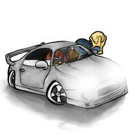

Amine Edge e DANCE
Amine traz em seu lançamento mais recente linhas de grave bem definidas e alguns vocais no estilo clássico que se tornaram sua marca registrada. Um bom EP para quem quer iniciar no tech house.
Ver álbumYunk Vino
Yunk Vino é um artista musical que apresenta um estilo que mistura pop, R&B e hip-hop. Suas letras sinceras abordam temas como amor, perda e superação. Apesar de pouco se saber sobre sua vida pessoal, sua música tem sido elogiada por sua capacidade de transmitir emoções poderosas e pela qualidade de suas produções. Com um futuro promissor, Yunk Vino é um artista que vale a pena ficar de olho.
Ver músicaéo TGL
Com lançamentos que estouraram nas redes sociais, como "Puto" e "Cheiroso".
Ver músicaO que é a música para você?
"Música é uma arte que se manifesta através de sons organizados em uma sequência harmoniosa e com ritmo definido. Ela pode ser produzida por instrumentos musicais, voz humana e também através de tecnologias de produção musical. A música tem a capacidade de provocar sensações e emoções diversas, além de desempenhar um papel importante na cultura, tradições e identidade de um povo."
Nilson"Música é a arte dos sons onde se encontram vários ritmos diferentes. Para mim, a música é muito importante, pois a utilizo em quase tudo o que eu faço. Quando estou estudando, jogando ou relaxando, ela me ajuda nos meus dias ruins."
Eder"A música é algo que está presente a todo tempo no meu dia a dia, sempre me ajudando a me expressar de forma mais leve e suave, seja cantando ou apenas ouvindo. Sempre que posso, estou tentando descobrir coisas novas: novos estilos, artistas, etc."
Kauã